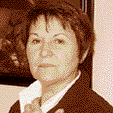

Viola Montenot est née à Martin en Slovaquie, elle a suivi une formation en Arts Plastiques dans son pays d’origine et s’est établie en France en 1969.
 © Montenot
Viola nous parle de ce temps d’exil qui nourrit ses recherches actuelles :
« L'exil est un ailleurs : qu'il soit vécu comme un choix ou qu'il soit subit, il s'impose comme sentiment de décalage. Le besoin d'exprimer cette préoccupation est passée par la redécouverte de mon propre pays et par l'identification avec son histoire : depuis des siècles, la notion d'exil se confond avec la survie.
La rencontre avec cette "culture du départ" m'a fait prendre conscience de ce décalage qui fait partie de mon identité, et d’où je puise la matière de mon langage plastique.»
"{...} Ses préoccupations d’artiste sont celles de l’humanité tout entière, un jeu où se nouent les impondérables de l’inconscient et les rapports inter-humains qui sont opposés, liés, fuyants, retrouvés. {...}" « {...} Le Printemps de Prague nous l’a amenée en 1969, l’été polynésien nous l’a reprise pendant quatre ans, le bel automne bourguignon nous l’a rendu pour toujours ... à moins que l’envie d’aller ailleurs ne la possède à nouveau. {...}
Le chemin qui porte un artiste vers l’accomplissement de son oeuvre est long et difficile. Ces êtres toujours en partance qui peuplent les tableaux de Viola sont les symboles de la quête du créateur à la recherche de sa propre fonction de son propre rôle. Ils traversent l’univers pictural du peintre tels des anges déchus à la recherche d’un paradis perdu, d’un bonheur passé, enfouis à tout jamais dans le tourbillon du temps et les méandres du souvenir.
Tous ces personnages marchent vers un idéal chimérique que peut-être ils n’atteindront pas. Peu import, ils sont, ils existent ... Ils sont une projection de notre propre conscience, la matérialisation de nos fantasmes. Viola est consciente que son rôle d’artiste est de donner à voir, elle nous entraîne, à la manière des héros de Dostoïevski, dans son inquiétude métaphysique indissociable de l’âme slave. La force de sa peinture est de nous faire accepter la condition humaine dans ce qu’elle a de plus extrême et de plus fondamentale. {...} Ses préoccupations d’artiste sont celles de l’humanité tout entière, un jeu où se nouent les impondérables de l’inconscient et les rapports inter-humains qui sont opposés, liés, fuyants, retrouvés. {...} »
Claude Martel – Galerie La Source.
Quelques dates d’exposition récentes
Salons et expositions de groupes
Viola Montenot
8 rue Antoine Bolnot - 2160 COUCHEY
03 80 53 00 27 - david.montenot@anpe.fr